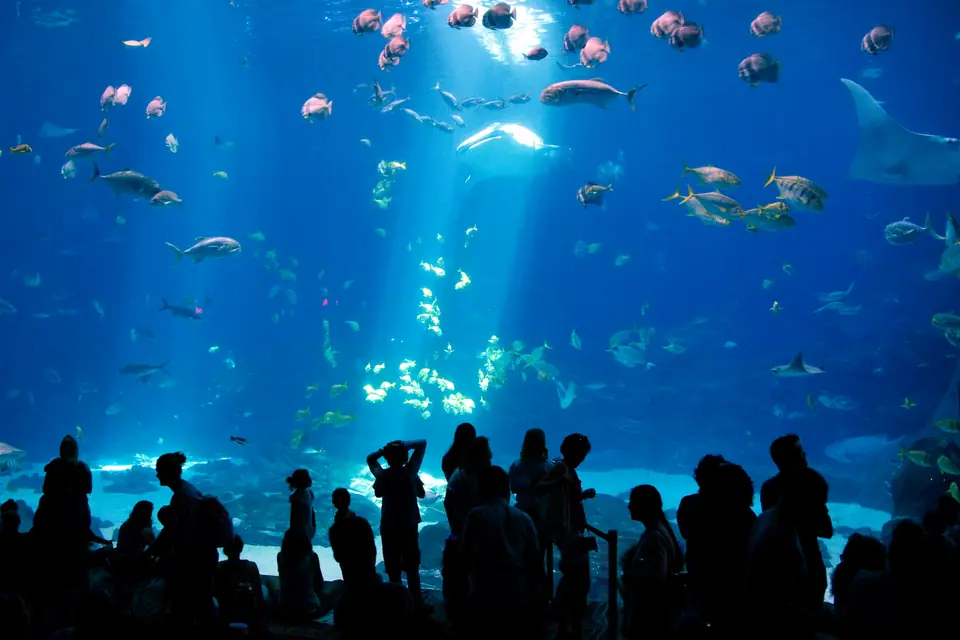

U.S. aquarium directory: rescue and conservation programs
Most aquarium listings stop at the address and ticket price. This directory records what each aquarium does for marine animals.

The first aquarium entries are on the way
I am researching the first aquariums now. Each entry will be checked against what the aquarium and the Association of Zoos & Aquariums have published before it appears here.
What each aquarium entry will cover
Every listing answers the same three questions, so two aquariums are easy to compare.
Animals this aquarium helps
The species the aquarium rescues, rehabilitates or protects, such as sea turtles, seals or manatees.
Rescue and rehabilitation program
What the aquarium actually does when an injured or stranded animal comes in, and whether animals are released.
Conservation work
The field projects and research the aquarium supports, in the wild and on site.
Read the facts while the directory grows
Four common aquarium myths, each checked against the research.